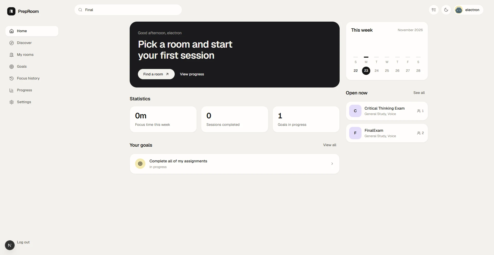
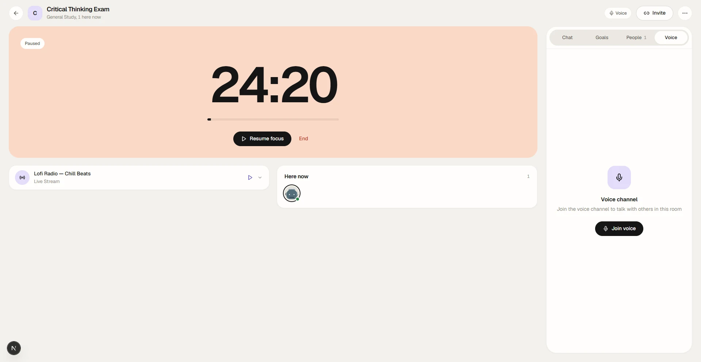
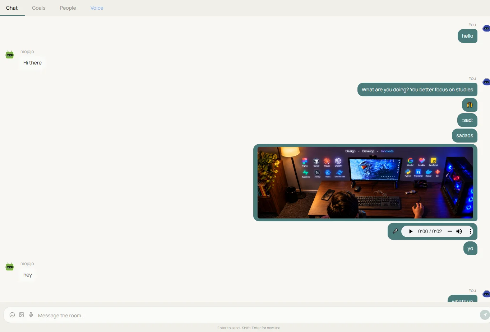
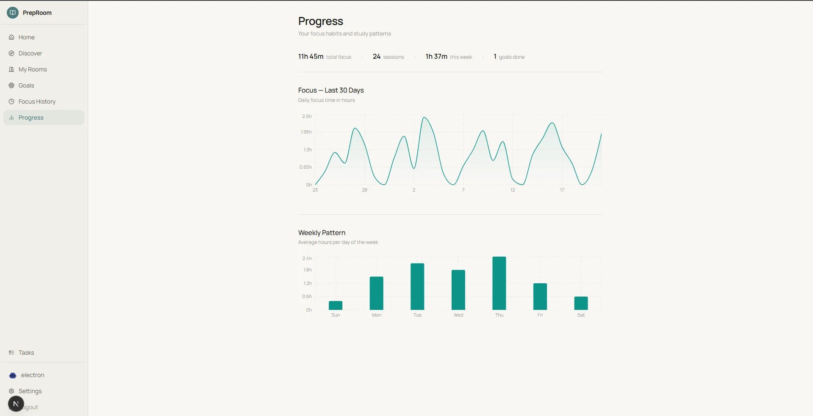
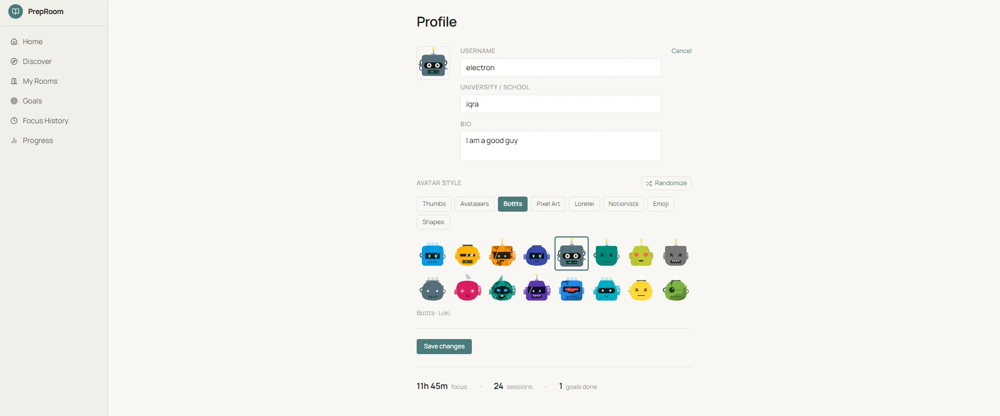

PrepRoom
A virtual study room where students focus together. Join a room, start a focus timer, and study alongside other people, with goals, chat and optional voice in one calm, minimal interface that stays out of the way.
The question
Could body-doubling work as its own product?
PrepRoom started from one product question: what would it take to make body-doubling work as a standalone tool, instead of a feature bolted onto a video call or a chat app? I took it from that question through research, design, architecture and engineering to a fully working product.
The problem
Studying alone is isolating
Students lose motivation without social accountability. Existing tools tend to cover either task management (Notion, Todoist) or social interaction (Discord, FaceTime), but rarely both in a way that actually helps you sit down and focus.
Body-doubling, simply working alongside someone else, is one of the most effective productivity techniques, especially for students who struggle with focus. Coordinating it over Discord calls or Zoom rooms is clunky, because those tools weren’t designed for it. Nothing combined a focused study space with real-time presence, structured timers, goal tracking and optional voice in one place that feels calm rather than overwhelming.
The solution
A shared room with nothing to set up
PrepRoom gives students a shared virtual room where they can see who’s online, what everyone is working on and how long they’ve been focusing, without setting up a call or joining a server.
The core loop is simple: create or join a room, start a focus timer, and study. Everything else layers on top: goals for accountability, real-time chat for quick questions, a lofi player for ambience, and voice for rooms that want it. The interface is deliberately sparse. There are no notifications competing for attention and no feed to scroll. Just a timer, your peers and the work.


Key features
Everything a study session needs, nothing more
Focus timer
A Pomodoro-style timer with configurable focus and break lengths. Its state syncs in real time across the room, so everyone sees who is focusing and who is on a break. A circular ring animates the countdown, slate blue for focus and warm sand for breaks.
Real-time presence
Every room shows who’s online, their status (studying, on break, in voice, away) and how long they’ve been in the session. Updates are pushed through Supabase Realtime, so the member list stays current without polling.
Room goals
Students set goals for the session, such as “Finish Chapter 5” or “Review lecture notes”, and tick them off as they go. A light sense of progress, shared with the group.
Chat and image sharing
Real-time text chat in each room, with images sent through Supabase Storage. Messages appear instantly for everyone connected.
Voice chat
Optional per-room voice powered by LiveKit. Members join with one click, the current speaker is highlighted, and mute and leave controls are always within reach.
Lofi music player
A built-in ambient player with curated lofi tracks, styled in muted lavender to set it apart, with play, pause, skip and volume.
Todo list
A personal task panel in the sidebar. Add tasks, reorder them by drag and drop, and check them off. Warm bronze keeps it visually separate from room goals.
Room administration
Room creators can manage and remove members, switch a room between public and private, and change its settings. The server rejects admin actions from anyone else; the button isn’t simply hidden.
Onboarding
A step-by-step introduction for new users covering display name, avatar, study preferences, goals and a room tour, with smooth Framer Motion transitions between steps.
Dashboard and analytics
A personal view of focus time, session history, goal completion and study streaks, with charts built in Recharts from data in Supabase.




How it’s built
Server-checked by default
Every sensitive action is validated on the server. Sending messages, controlling timers, changing roles and joining private rooms all go through Row Level Security policies and API route checks. The front end never relies on hidden buttons for security.
| Part | Tools |
|---|---|
| Framework | Next.js 15 with the App Router and TypeScript. Server Components by default, with client components only where interaction needs them. |
| Database and auth | Supabase (PostgreSQL). Row Level Security on every table, Realtime subscriptions for presence and chat, and built-in auth with Google sign-in. |
| Voice | LiveKit for optional per-room voice. Tokens are generated on the server through a protected API route, so the API secret never reaches the browser. |
| Interface | Tailwind CSS for styling, Framer Motion for animation, Radix UI primitives for accessible dialogs, dropdowns and tooltips, and Recharts for analytics. |
| Type and icons | Manrope from Google Fonts as the only typeface, and Lucide icons at 20px with a 1.5 stroke throughout. |
Design system
Minimal, a little playful, and calm
PrepRoom’s visual identity sits between minimal and playful. It’s calm enough for long study sessions but warm enough to feel like a shared space rather than a clinical tool.
The palette uses muted, desaturated tones instead of the usual high-saturation UI colours. Eight semantic roles each map to a feature, and every one has a muted tint for subtle backgrounds. The whole system supports dark and light themes through CSS custom properties.
Typography
Manrope is the only typeface: a geometric sans-serif with rounded terminals that feels friendly without losing readability. The scale runs from 11px captions to 36px display headings, with line-height and letter-spacing tokens at each level.
Surfaces
The dark theme layers a near-black base (#111113) with slightly lighter sidebar and surface layers, and raised cards for modals and dropdowns. The light theme mirrors this with warm off-whites and paper tones rather than pure white.
Radius and spacing
Generous radii, 4px to 8px on components and fully round for avatars and pills, keep things approachable. A four-point spacing scale keeps layouts consistent without being rigid.
Motion
Transitions are short (150 to 200ms) with ease-out curves. Sidebar icons have subtle hover animations, panels slide in and out, and the timer ring moves smoothly between states. Nothing bounces or overshoots, so motion supports the calm.

Product decisions
The choices that shaped it
Row Level Security without silent failures
Supabase’s RLS is powerful but unforgiving: a table with RLS on and no matching policy silently drops inserts and updates. No error, the data just doesn’t appear. Fixing this meant writing explicit policies for every operation (select, insert, update, delete) on every table, and understanding exactly which user context each policy receives.
Timer sync without drift
Instead of syncing the timer’s current value, I store its start time and duration on the server and let each client work out the time remaining locally. Status changes (focus, break, idle) are broadcast through Realtime subscriptions.
Trust as a product requirement
A study room where a non-admin can kick someone, or where messages leak between rooms, isn’t a room anyone trusts. It was tempting to hide the Kick button and call it done. Instead every admin action is checked by RLS policies and the server. If students are going to study in a shared space, it has to be safe by default, not just safe-looking.
Visual identity as product language
The first version used Tailwind’s default palette, and every element competed for attention. For a product whose whole value is calm focus, that worked against itself. Moving to a muted, semantic colour system across 12 component files was a product correction, not a polish pass. The palette teaches the interface before the user reads a word.
Voice that degrades gracefully
Voice is optional. If LiveKit isn’t configured, the app shows a notice instead of breaking, and if microphone permission is denied, the interface adapts. Voice is a progressive enhancement, not a core dependency.
Outcome
What I learned
PrepRoom began as a hypothesis, that body-doubling works better as a purpose-built product than as a workaround inside general tools, and ended as a fully working app that supports it. Every feature is there because a real student need called for it, not because a framework made it easy to add.
- Product decisions compoundChoosing real-time presence over polling was a product bet that seeing others study live would drive accountability better than a list of recent sessions. That bet shaped the whole architecture.
- Saying no is harder than saying yesDMs, friend lists, study groups and gamification all sounded good on paper. Keeping the scope to what helps someone sit down and focus meant cutting them so the core experience stayed clear.
- Design is product workThe muted palette, calm motion and sparse layout aren’t surface choices. A study app that feels like a notification-heavy productivity tool would undermine its own purpose. The design system encodes the product’s point of view: calm focus over engagement metrics.
- Progressive enhancement is a product strategyVoice and image sharing are valuable, but a student who just wants to focus shouldn’t need a microphone or a file picker to start. Join, start the timer, study: that loop works with nothing configured.
What’s next: two-factor authentication (API routes written, settings screen in progress), public room discovery and invite links, mobile refinements, and deployment to Vercel with a production Supabase instance.